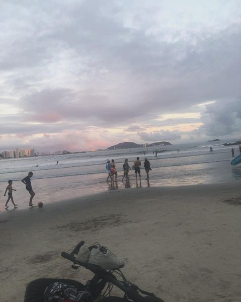
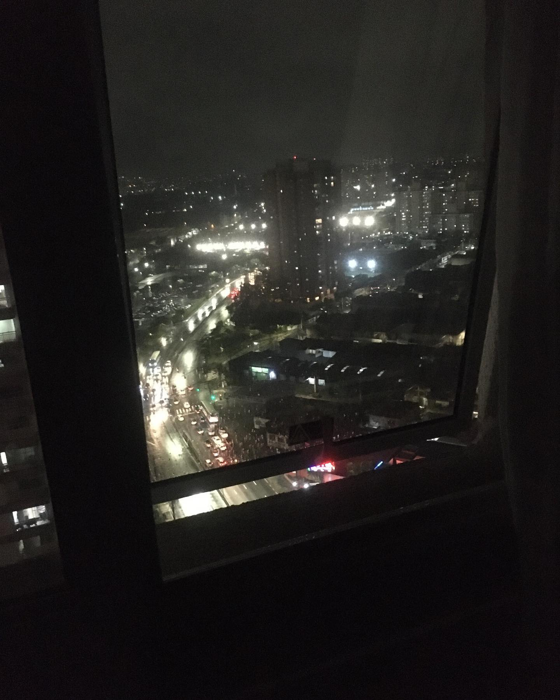
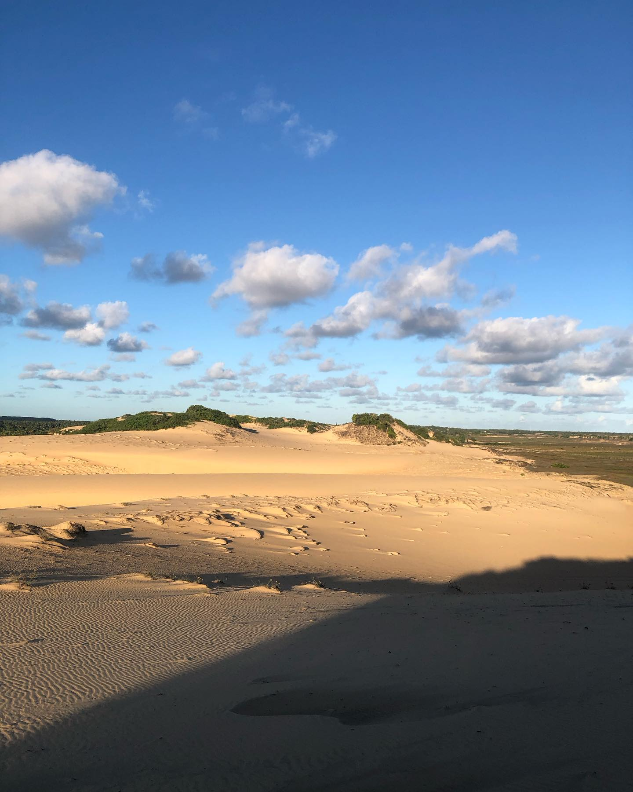

A Praia da Enseada, localizada no Guarujá, é uma das mais conhecidas e frequentadas do litoral
paulista. Com cerca de 5,5 km de extensão, suas areias claras e mar tranquilo são ideais para famílias e
banhistas. Além das belezas naturais, a orla da Praia da Enseada conta com uma infraestrutura completa,
oferecendo uma variedade de quiosques, restaurantes e opções de lazer, como passeios de banana boat e
aluguel de jet ski.
Por: Fernando Axis
Ler mais

São Paulo, a maior cidade do Brasil, é um centro cultural e econômico
de destaque. Com mais de 12 milhões de habitantes, a cidade oferece uma rica diversidade
gastronômica e uma vibrante cena cultural, com museus como o MASP e eventos como a Bienal
de Arte. São Paulo também é um importante centro financeiro e de negócios. Conhecida por
sua vida noturna agitada e opções de lazer variadas, a metrópole é um destino dinâmico e
cosmopolita, sempre repleto de novidades.
Por: Fernando Axis
Ler mais

Interior de Sergipe, repleto de encantos naturais e culturais.
Conhecido por suas paisagens bucólicas e cidades históricas, a região oferece um ambiente
tranquilo e acolhedor. Destinos como São Cristóvão, a quarta cidade mais antiga do Brasil,
e Laranjeiras, famosa por suas festas folclóricas, são pontos altos. Além disso,
o interior de Sergipe é marcado por suas tradições, culinária típica e a hospitalidade
de seu povo, proporcionando uma experiência autêntica e enriquecedora para os visitantes
.
Por: Fernando Axis
Ler mais